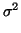
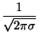
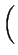
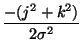
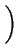
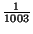
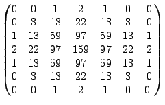
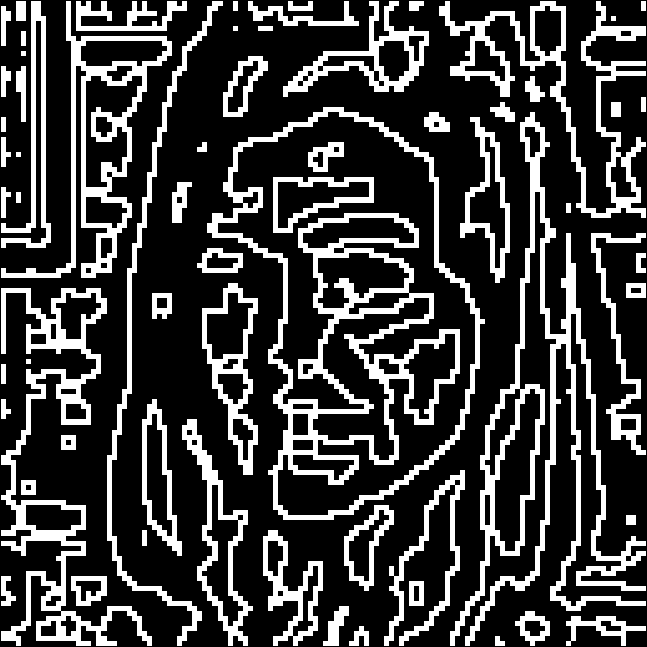

Next: The Laplace Operator
Up: An application to Image
Previous: An application to Image
Contents
Index
As we saw in Example 6.8, an obvious use for masking is to
implement a smoothing or blurring. Such an effect is easy to see on
an image. We now approximate a normal, or Gaussian
blur, obtained perhaps using a ``soft'' lens so
the light spreads out on the focal plane, rather than all going to the
``correct'' spot. Such a Gaussian, of variance  is of the
form
f (j, k) = exp,
where conventionally we assume the function is zero outside a
neighbourhood of radius 3 . If we take
= 1 we get
the mask
. If we take
= 1 we get
the mask
 .
The result of applying this mask, considered as centered on the
largest value, to the image of Fig 6.1 is shown in
Fig. 6.2. It is clear that a noticeable blur has been
obtained as was expected.
Figure 6.2:
Output after Gaussian filtering.
|
|
Figure 6.3:
The zero-crossings of the image filtered by a difference of Gaussians.
|

|
It may be less clear why there is any interest in blurring an image.
However it can form a useful intermediate step. The image shown in
Fig 6.1 was filtered using a difference of Gaussians (DoG
filter) at two different scales. The resulting
filter is supposed to respond in a way very simlarly to the receptive
fields in our eyes. The output is no longer always positive, so does
not represent an image, but the pixels where the intensity changes
sign are marked in Fig 6.3. The overall effect is that of a
neurophysiologically plausible edge detector.
Next: The Laplace Operator
Up: An application to Image
Previous: An application to Image
Contents
Index
Ian Craw
2001-04-27